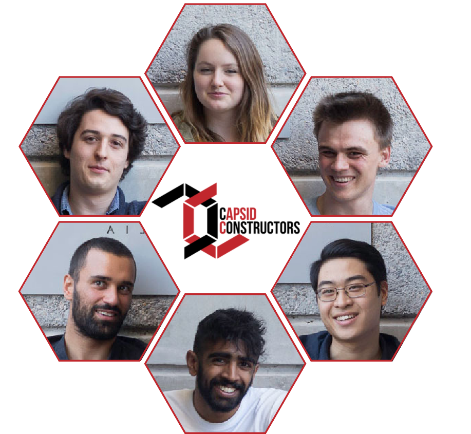

Jake is a third-year Advanced Science/Law student majoring in Physics. He has applied a mathematical formalism to the biological process that the team is investigating
He hopes to one day tackle the world's greatest issues using his interdisciplinary Legal and Scientific Background.
Lucien is in his final year of an Advanced Science degree in microbiology, and already has a degree in Communications
He is now extremely interested in environmental microbiology. He hopes to synthesise bioinformatic approaches with field research, to understand how microbes and macro-organisms live in various obligate states of symbiosis.
Maddie is a third-year Advanced Science/Law student with a major in molecular and cell biology.
She is passionate about synthetic biology because of its endless potential, and hopes to research novel solutions to environmental problems.
She is also interested in the legalities of biotechnology in Australia, and how effective policy can foster new scientific discoveries.
Thil is in his fourth year of a Chemical and Biomedical Engineering degree.
After completing a biomedical research scholarship, he aspires to continue exploring the biomedical world in hopes of treading undiscovered ground.
Synthesising unique ideas and using entrepreneurial and technical skills is what excites him to work in the team and contribute to this project.
Hugh is in his final year of a degree in Chemical Engineering (and is looking for a good graduate position!).
He has used his background to derive a systematic approach to the challenges of BIOMOD.
He likes to think that though this sort of work is on a smaller scale than more traditional applications of engineering, the applications are potentially much greater.
Brian is a third year Advanced Science/Arts student, majoring in microbiology and music.
A school project on the history of penicillin discovery inspired a love for science and all things microbial, and Brian has been hooked ever since.
Synthetic biology excites Brian, as he enjoys exploring new ideas and coming up with creative solutions.
The team have been graciously mentored by the Lee Lab at the EMBL Australia Node for Single Molecule Science, School of Medical Sciences, UNSW Sydney.
Lawrence, Sophie, Rokiah, Steph, Andy, Chu Wai, Boaz, Abi and Jon - your patient guidance and well placed criticisms are invisible here, but all the same they are a critical part of our finished product. We can’t say enough about all you have done for us, thankyou!
We would also like to acknowledge Dr Derrick Lau (UNSW Sydney) and Dr David Jacques (UTS Sydney) for their contributions and assistance with the protein engineering segment of our project.